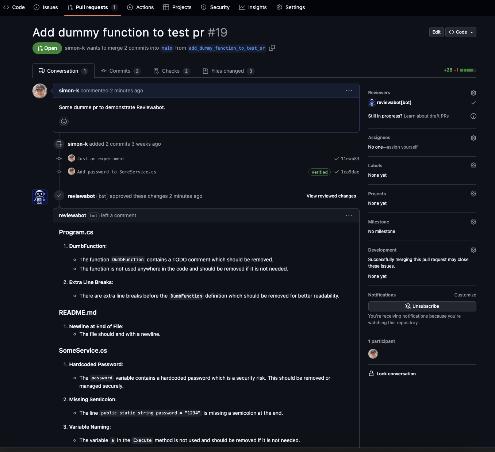

About Reviewabot
Reviewabot is your code review assistant. It helps you review your pull requests when no one else can help you.
Installation
Simply install the Reviewabot GitHub App and then all new PRs will get a review from Reviewabot.
Permissions
The app needs permission to read the repository content an write pull requests.
How it works
It's pretty simple. Reviewabot uses GPT4o to review the PR diff. Then it adds a comment to the PR with its findings and approves the PR.
Screenshot
Here is a screenshot that shows an example of a review comment and an approved pull request.
